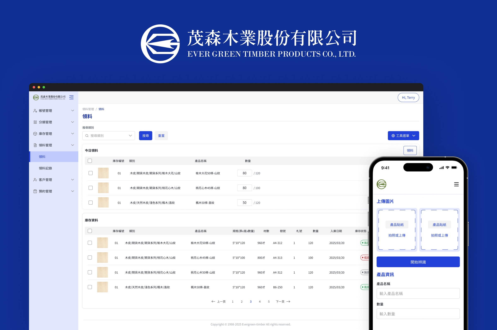
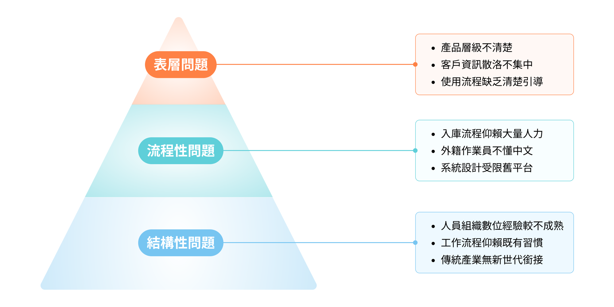
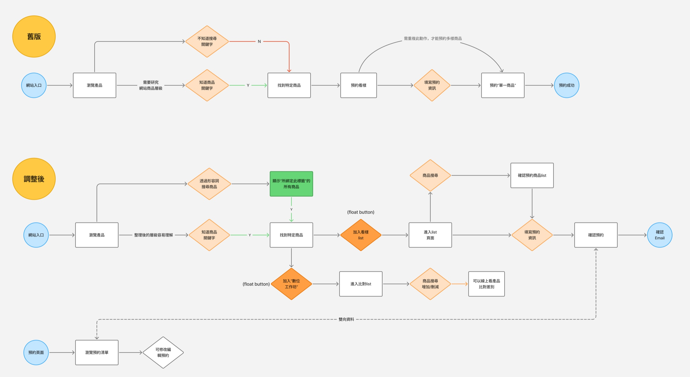
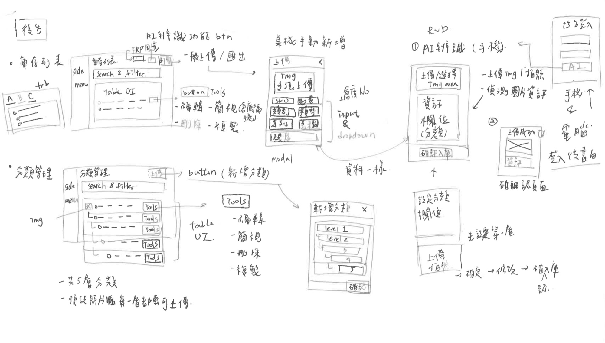
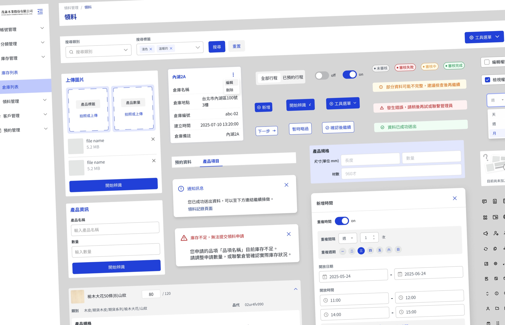
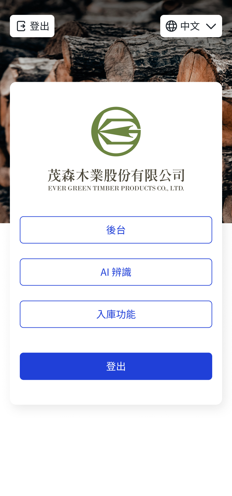
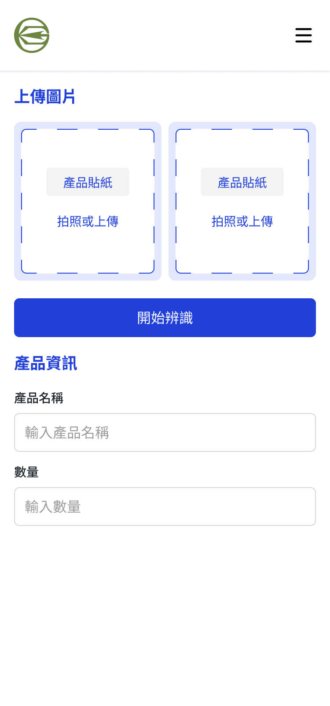
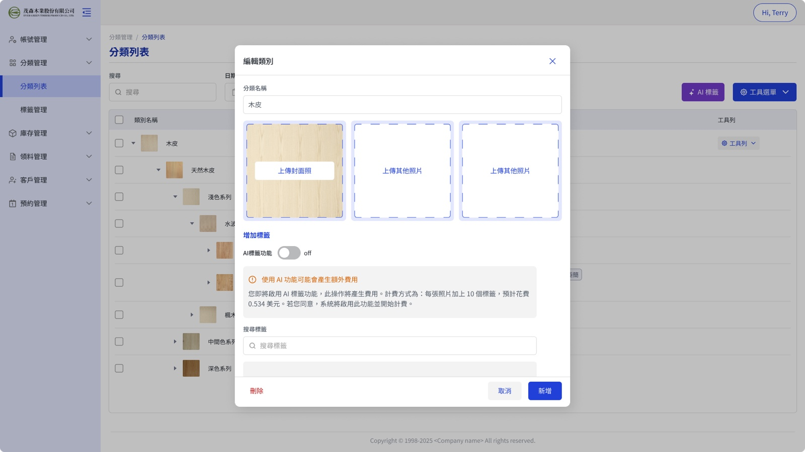
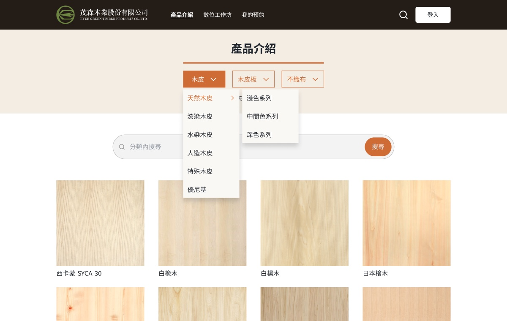
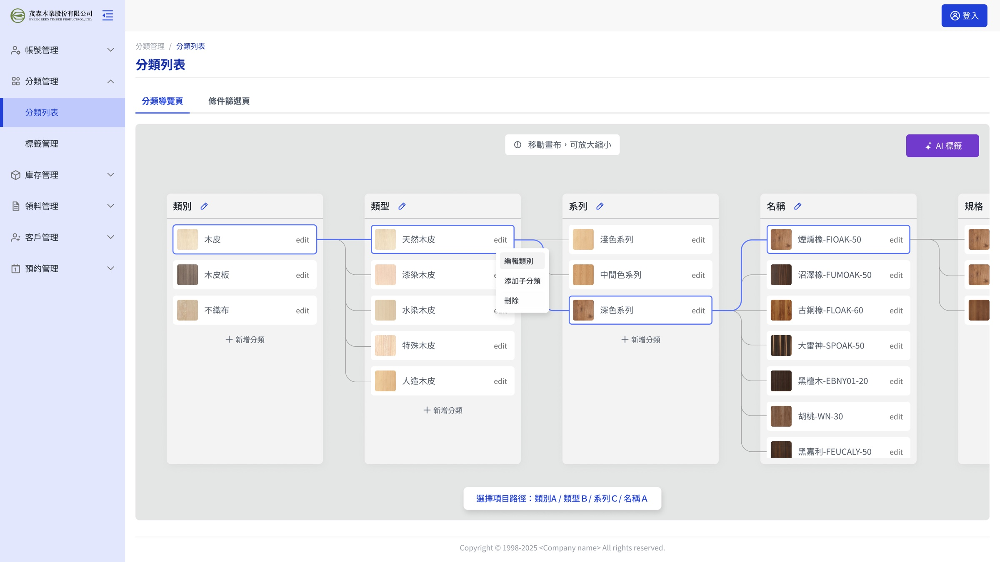

2025年3月 ~ 2025年11月
茂森木業：重塑傳統木業，打造從入庫到展示的全新數位體驗
專案概覽 Project Overview
成果展出
在木業長期依賴人工流程、資訊分散且缺乏數據基礎的情況下，我們導入了更清晰的資訊架構與 AI 辨識流程，讓入庫流程、產品分類與前台操作全面數位化。產品上線後，我們與 Google 共同舉辦成果分享會，實際展示平台包含 AI 辨識、前後台操作與流程優化的成果，也讓業主看到傳統流程被量化、數位化後的具體效益。
透過現場的 AI 辨識示範與平台操作展示，成功讓產業界理解數據化帶來的價值，例如更快的入庫判斷、更一致的分類方式，以及可被追蹤記錄的工作流程。當天也吸引了 3 家同業廠商 主動洽談合作意向，為後續的跨廠導入與商業模式延伸開啟新的可能性。
角色與產出
在此專案中，我與三位工程師、Product Owner 以及業主密切協作，負責完整的 UI/UX 設計流程。工作內容涵蓋問題釐清、使用流程調整、與工程團隊協調時程與實作內容，到最後的介面設計與交付。過程中與業主溝通，確保功能符合實際操作情境。
專案挑戰
這次最挑戰的是龐雜的資料量與既有使用習慣的導入。我們需要在資訊清楚易用的前提下，兼顧使用族群年齡層偏高的現況，並協助業主與企業使用者理解新的操作方式，讓系統不只是完成上線，而是真正融入現場作業流程。
團隊目標
我們希望協助木業傳產重新整理線上與線下的數位體驗，透過數位應用，提升業者與客戶之間的溝通效率。同時在設計上重新梳理產品系統架構，讓現有功能能穩定運作，也為未來的擴充與調整保留足夠彈性。
專案背景 Background
在數位化加速的時代，年輕人更嚮往彈性的工作型態，台灣許多傳統產業因此面臨後繼無人的困境，技術與產業價值也逐漸被忽視。
茂森的團隊組成主要是資深的年長員工，搭配年輕的外籍勞工，一起完成每日的進出口作業。這次他們找我們合作，希望能簡化繁雜的流程，把紙本與線下作業重新整合到數位系統中，不只減少人工操作和錯誤，也縮短新手的上手時間，讓傳產不再受限於傳統流程，更貼近數位時代的需求。

設計流程 Design Process
- 需求定義
透過與業主的深度訪談，我們整理出木業在日常作業中面臨的實際困難與流程瓶頸。
- 邏輯規劃
使用者的學習成本與不同角色的操作習慣，作為後續設計方向的基礎。
- 框架繪製
我們提出多種可能的解法，並製作初版 wireframe 與業主確認方向，確保往後的設計能真正落實。
- UI Design
以手機網頁作為入庫作業的主要情境，讓現場人員拍照就能完成辨識與建檔，降低年長員工與外籍作業員的操作門檻。
- Design system
建立系統化的元件庫與中性、耐看的視覺風格，確保前後台一致，也讓未來擴充功能時更好維護。
- 開發交付
在 4 個月的時程內，透過每週 scrum 例會與工程團隊核對需求與優先度，並因應現有套件的限制調整設計。
專案現況釐清 Current State & Define
我們觀察到茂森現有的前台官網在資訊層級與分類結構上不夠清楚，部分圖像與內容容易造成誤解，進而影響與客戶之間的溝通。由於客戶多半僅透過官網了解產品，當分類與層級混亂時，容易產生理解落差與錯誤期待，進而影響整體體驗與信任感。
這次業主期待的不僅是前台介面的視覺優化，而是整個作業流程的重整，實際改善日常作業效率。因此，我們從拆分使用情境出發，重新檢視前台與後台之間的互動關係，並由淺入深的問題拆解，與業主核對目前在資訊結構、操作流程的問題。

定義問題
1. 資訊架構混亂，導致使用者理解有誤
目前前台產品與客戶資訊缺乏清楚的層級與分類邏輯，使用者難以快速建立完整認知。若不熟悉木材名稱，也會面臨找不到產品的困境，使新客戶第一步就卡關。
2. 系統流程過度仰賴人力，操作效率與穩定性不足
後台作業流程高度依賴人工處理，特別是在入庫與日常操作上，缺乏有效的流程支援與操作輔助。進一步訪談後發現，外籍作業員在現有系統的操作存在理解落差，也限制了流程優化與自動化的可能性。
3. 組織與系統結構老化，限制新流程的導入
在既有組織與系統條件下，流程與系統使用仍高度依賴既有作業習慣，加上平台架構本身的限制，影響整體調整的彈性與效率。

點擊圖片可放大
設計目標 Design Approach
我們整合既有流程、業主痛點與競品狀況，協助團隊釐清問題方向，並在確認技術與時程可行性後，共同發想功能與流程調整。設計過程中亦同步考量未來擴充的彈性，避免後續調整受限。
1重新整理資料架構，讓使用者搜尋產品更便利
由後台去調整產品分類並重新梳理資料架構，客戶在前台尋找內容時會更直覺。清楚的資訊架構也會讓其他相關使用者（如設計師、傢俱業者），更快找到所需的產品。透過與競品畫面的比較，可以在資訊層級與分類方式上的差異。競品多半能在第一層就傳達產品結構與重點，而茂森現有官網的層級較為混亂，關鍵資訊不易被辨識。

2導入 AI 辨識功能加速入庫流程並提升資料品質
透過「AI 辨識木材」的入庫流程，系統能自動分類產品並同步更新後台資訊，減少人工判斷的時間與錯誤，讓業主的入庫與管理流程更順暢。
挑戰與限制 ｜ Challenges & Constraints
1. 有限的時程
我們需要在 4 個月內上 stage 測試，雖然前期的功能範圍相對明確，但在實際測試後仍出現不少調整。為了讓大家保持同步，團隊採用每週一次的 scrum 例會，快速核對需求、討論優先度並處理功能變動。
2. 技術限制
因為開發時間有限，多數 UI 元件必須依賴現有套件完成。後端串接與 AI 木材辨識的模型訓練也依賴業主提供資料，但現場的工作人員多半習慣原本流程，導致資料蒐集上遇到一些阻力。



點擊圖片可放大
在確認初步方向後，快速繪製 wireframe 和流程，協助團隊與業主對齊流程方向與功能範圍，並在正式設計前釐清需求與調整重點。討論後，我們確定這次的 design scope 很大、細節也多，因此採用敏捷開發。目標是先完成後台的核心功能，推出第一版給業主實際測試，並依使用情況持續調整與優化。
設計產出 Deliverables

進入解決方案設計前，先建立可持續發展的 Design System，透過系統化的元件庫與中性、耐看的視覺風格，確保平台整體一致性，並提升未來功能擴充與維護的彈性。
1AI 辨識流程
為了進行初期測試並快速累積 AI 模型所需的資料，團隊在第一階段優先完成 AI 辨識系統的導入。考量入庫作業多半以手機操作為主，設計上以行動裝置的網頁流程作為主要使用情境。在與茂森木業團隊討論後，我們了解到進貨時會逐一記錄並歸檔木材資訊，因此希望能在下一批入庫作業中導入新的流程，讓作業人員透過手機拍照進行辨識並同步完成資料登錄，進一步提升分類與建檔的效率。



2分類管理
我們重新梳理木材的分類方式，將原本混亂、不一致的命名與層級調整為更貼近使用者思考的架構。對於後台來說，管理變得更直覺；對前台使用者而言，也能更快速找到符合需求的產品。這項調整不只是整理資料，而是讓整個平台的搜尋與瀏覽體驗具備明確起點。



點擊圖片可放大
3領料管理
現場人員每天都要處理領料，但舊流程依賴口頭、紙本或經驗判斷，容易出錯。新的領料功能透過更直覺的互動方式，讓操作變得簡單好懂，也讓年長員工能在短時間內上手。這讓整體作業效率、準確度都有明顯提升。
4AI 標籤功能
為了降低初次使用者的理解門檻，我們導入 AI 標籤功能，將產品特性轉換為更貼近使用者感受的形容詞標籤。使用者不需要理解專業分類或產品代碼，也能透過直覺描述快速篩選與搜尋，協助建立對產品的初步認識，提升整體探索效率。


5前台展示
在保留原有視覺風格的前提下，我們重新整理資訊架構，將複雜內容簡化，並引入更清楚的分類方式。透過減少干擾資訊與重新布局搜尋流程，前台體驗變得更乾淨、專注，也讓客戶能更順利找到木材資訊。


反思與學習 Reflection
1檢視使用者的行為差異
在專案進行中，我們發現實際操作平台的使用者可能包含外籍人員，因此重新檢視流程，並調整後端資料結構，使系統更符合實際使用情境。這次經驗提醒我們，及早理解「誰會使用系統」，對設計決策與專案效率都相當重要。
2分類管理
在專案時程有限的情況下，原本將「分類導覽」與「條件篩選」整合在同一個表格中，試圖用單一介面同時滿足多種使用情境。
然而在實際設計與討論過程中，意識到這兩者屬於不同的操作流程，也不適合以多工方式同時處理。最後選擇將分類導覽頁與篩選結果頁拆分，讓使用者清楚知道兩個頁面的使用差異，再進行篩選。這次經驗也讓我清楚了解在有限的時間及開發資源下要如何做出更符合操作體驗的設計決策。
